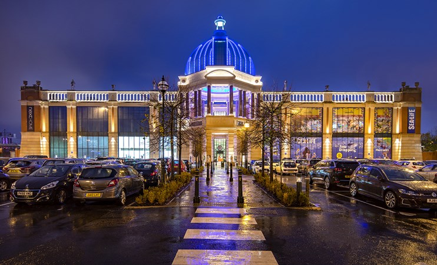

The Trafford Centre
The Trafford Centre opened in 1998 is the largest indoor shopping Centre and entertainment complex in Greater Manchester. The Trafford Centre consists of over 200 stores with high-end brands, restaurants, and entertainment options. The most used shop in Trafford Centre is Selfridges, which consists of most high-end brands such as Gucci, Dior and many more with also skincare and makeup. You could experience getting the tram, bus, and uber to the destination as there as various options to get there.
CONTACT
Manchester, UK
Phone: +44 151515
Email: mail@mail.com
Phone: +44 151515
Email: mail@mail.com